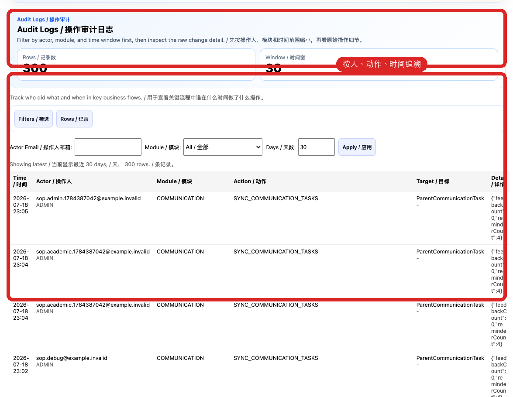
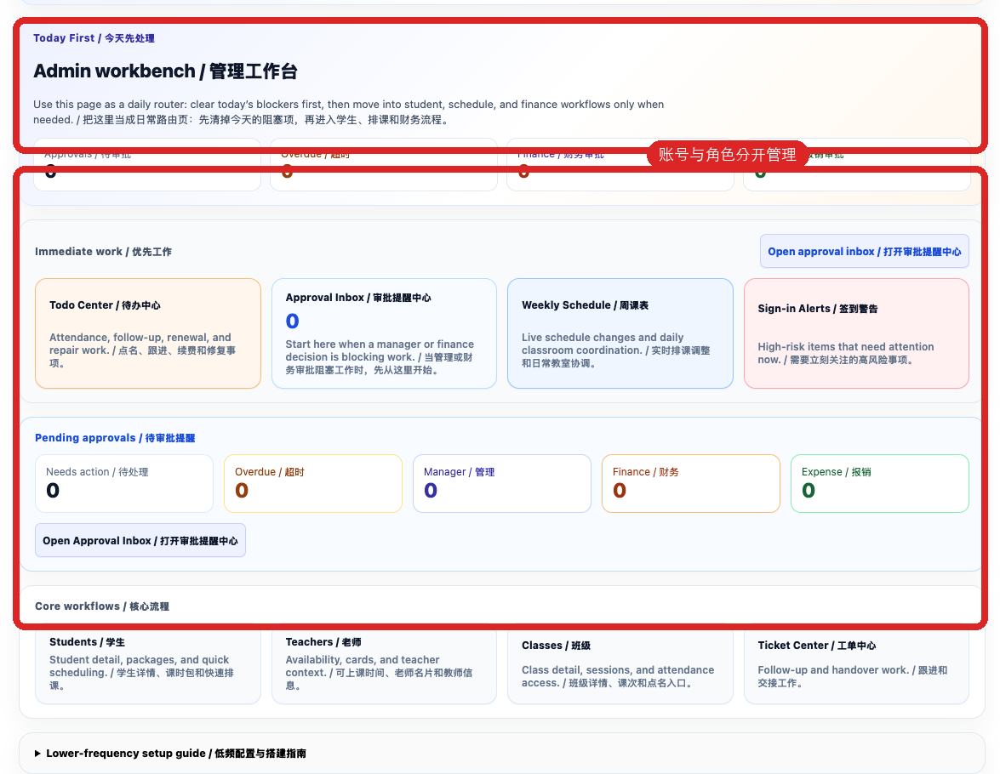

STEP 1
管理移动端
先看全部待办、审批、风险、工单和提醒异常，不替代员工逐条执行。
 真实系统截图：按本页说明核对入口、状态和最终结果。
真实系统截图：按本页说明核对入口、状态和最终结果。确保人员只做获授权工作，并对质量和培训结果负责
先看全部待办、审批、风险、工单和提醒异常，不替代员工逐条执行。
真实系统截图：按本页说明核对入口、状态和最终结果。双角色账号切换后仍受当前身份权限限制；发现入口异常先核对账号，不重复操作。
 真实系统截图：按本页说明核对入口、状态和最终结果。
真实系统截图：按本页说明核对入口、状态和最终结果。检查负责人、敏感内容审核、自动/人工通知状态、更正和留痕。
 真实系统截图：按本页说明核对入口、状态和最终结果。
真实系统截图：按本页说明核对入口、状态和最终结果。按人员、时间和对象复核关键操作；异常更正必须能解释原操作和修复结果。

真实系统截图：按本页说明核对入口、状态和最终结果。区分等待授权、排队、成功、失败和人工补发，不能把技术发送状态当作家长已理解。
 真实系统截图：按本页说明核对入口、状态和最终结果。
真实系统截图：按本页说明核对入口、状态和最终结果。新员工按岗位授权；换岗及时调整；离职立即停用并转交负责人、工单和全托管学生。

真实系统截图：按本页说明核对入口、状态和最终结果。质量意见发给指定老师，明确事实、表扬或改进动作和是否需要确认已读。
 真实系统截图：按本页说明核对入口、状态和最终结果。
真实系统截图：按本页说明核对入口、状态和最终结果。员工完成阅读、80 分测验和培训数据实操后，主管检查结果证据，通过或退回重做。